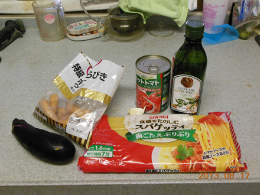
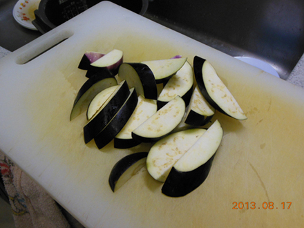
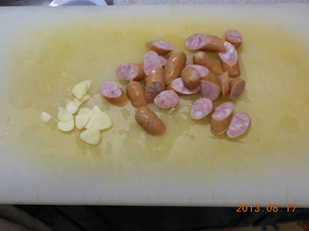
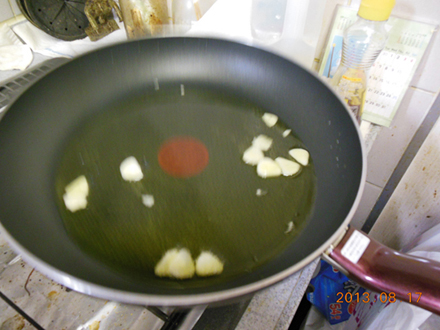
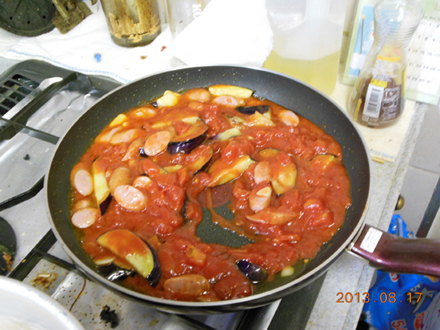
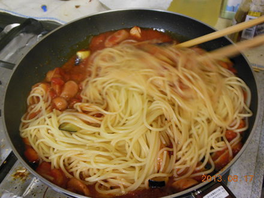
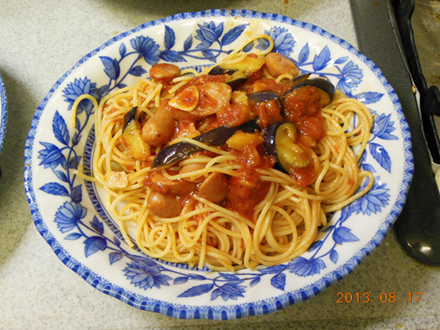

トマトソーススパゲッティの作り方
材料 2人前
- スパゲッティ 200g
- ソーセージ 数本
- なす 1本
- ホールカットトマト 1缶
- オリーブオイル 少量
- ニンニク 1片
- 塩、こしょう 少々
作り方

材料一式 見本

なすは適当の大きさに切ります。酸化が気になるなら、水に入ったボールにつけておく

ソーセージも一口くらいに切って、にんにくはいためるためにスライスする。

熱したフライパンに、オリーブオイルを少量入れ、ニンニクを加えます。ニンニクのいい香りが出てきたら、焦がさないうちに、ニンニクを取り出します。

なす、ソーセージをいため、しんなりとしてきたらホールカットトマトをあけて、フライパンに流し込みます。煮詰めすぎると汁気がなくなるのでパスタが茹で上がるまで火を止めておくといいでしょう。

表示通り7分ゆでたパスタを、水気を切って出来たトマトソースへいれて味が絡まるように混ぜます。味が物足りなかったら、お好みで塩とこしょうで味を整えます。

最後にお皿に盛りつけて完成！